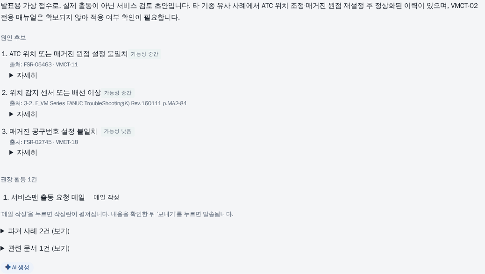
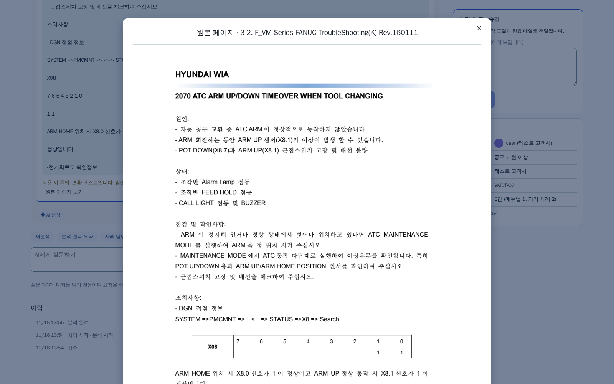
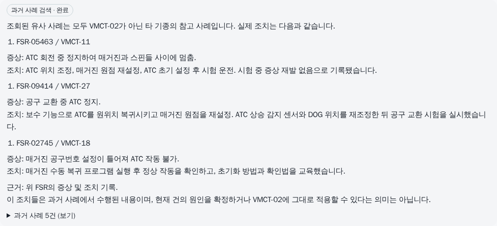
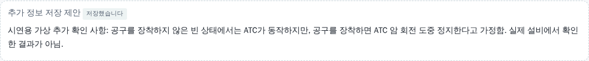
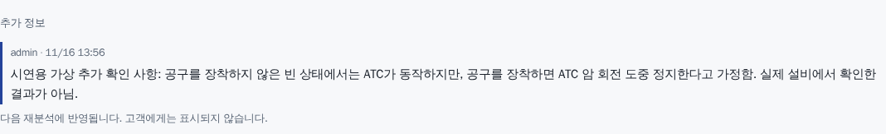
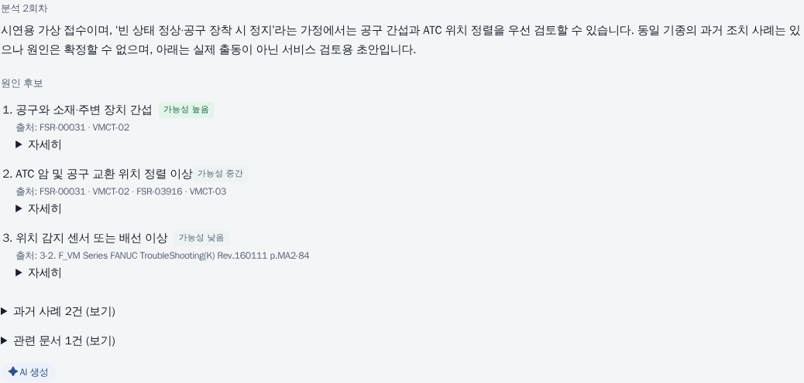
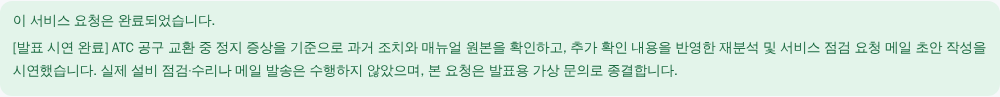
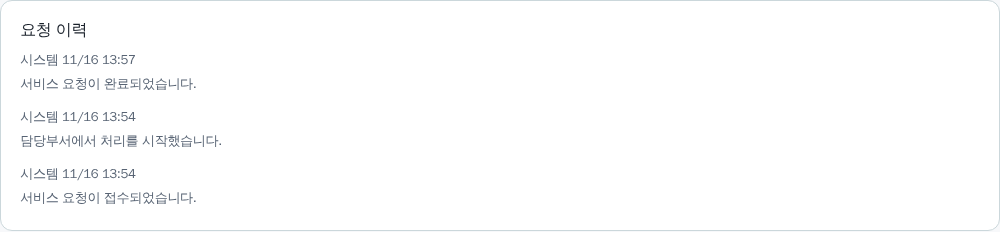

자료 분산
기종별 매뉴얼과 과거 조치 이력의 개별 탐색 필요
AI 네이티브 최종 프로젝트 / 공작기계 A/S 지원
공작기계 A/S 요청 AI 분석 서비스
매뉴얼·과거 사례 기반
A/S 요청 분석·처리 지원
매뉴얼·과거 사례 검색,
부서 메일 작성과 처리 결과 관리
01 / 문제 정의
기종별 매뉴얼과 과거 조치 이력의 개별 탐색 필요
알람·부품번호의 정확한 구분과 표·도면의 원본 대조 필요
부서별 협조 요청 작성과 처리 경과의 별도 기록
서비스 목적: 고장 확진이 아닌 근거 탐색·후속 업무 준비 지원
02 / 사용자별 기능
고객
AI 분석·대화, 매뉴얼 원본, 부서 메일 비공개
운영진
신규 접수의 고객 전용 제공. 부서별 별도 작업 화면 제외
03 / 서비스 처리 흐름
로그인 정보 기반 접수자·회사 자동 기록
운영진의 분석 실행
검색 근거·원인 후보 확인
대화·부서 메일 작성
추가 정보 저장·재분석
운영진의 처리 결과 작성·요청 종결
AI 제안과 실제 실행의 분리. 발송·정보 반영·재분석·종결 시 운영진 조작 필요
03-1 / 실제 화면 시연 · 고객 접수

03-2 / 실제 화면 시연 · AI 분석

03-3 / 실제 화면 시연 · 원본 확인

03-4 / 실제 화면 시연 · 추가 질문

03-5 / 실제 화면 시연 · 메일 작성

03-6 / 실제 화면 시연 · 추가 정보 저장
01 / 운영진이 확인한 제안 카드

02 / 작성자·시각이 남는 추가 정보

03-7 / 실제 화면 시연 · 재분석

03-8 / 실제 화면 시연 · 고객 결과 확인
01 / 고객에게 보이는 완료 안내·처리 결과

02 / 고객용 처리 이력

04 / 시스템 구성
BROWSER →
→ DATA & PROVIDERS
05 / AI 에이전트
4 검색·조회 도구 / 구조화 분석
시도당 도구 12회 · 원본 3회 · 모델 요청 16회 제한.
12 전체 도구 / 운영진 대화
첫 분석 성공 후 이용. 요청당 질문 30개, 종결 후 읽기 전용.
06 / 검색 증강 생성(RAG)
매뉴얼의 페이지·표·번호 색인
조치 내역이 있는 과거 사례 정리·중복 병합
식별자 정확 조회·증상 검색 분리
키워드·문자열 유사도·벡터 순위의 RRF 결합
구조화 분석의 원본 이미지·텍스트 활용
운영진의 근거 페이지 이미지 열람
정확 일치 조회의 범위: 자료 내 번호의 등장 여부 확인. 번호의 의미·고장 원인 확정 제외
07 / 안전장치·검증 한계
검증 한계: 자유 서술 대화의 동일 출처·형식 검증 미적용. 원본·현장 상황에 대한 별도 대조 필요
08 / 기술 선정 이유
| 선택 | 이유 | 감수한 제약 |
|---|---|---|
| React · FastAPI | 상태형 UI와 Python 검색·문서 처리 연결 | 백그라운드 상태 조회·스트리밍 관리 필요 |
| PydanticAI | 구조화 결과·도구 호출·사용량 제한 구성 | 스키마 검사가 사실성을 보장하지 않음 |
| PostgreSQL + pgvector | 업무 기록과 하이브리드 검색을 한 DB에서 관리 | 대규모 부하·검색 품질은 별도 검증 필요 |
| OpenAI 호환 API | 모델 제공자와 서비스 로직의 결합 완화 | 제공자별 API 호환성 확인 필요 |
| Docker 단일 이미지 | UI·API를 동일 주소로 배포 | 현재 단일 서버 프로세스, PDF 경로 일치 필요 |
09 / 개발 이력·검증
서비스 기반
React·FastAPI·pgvector와 단일 이미지 구성
검색 Agent
매뉴얼 검색·인증·스트리밍 연결
업무 흐름 통합
분석·대화·메일 연결, 승인·배정 흐름 단순화
역할·반응형 개선
고객 전용 접수와 좁은 화면의 운영진 목록 개선
격리 DB·모델 및 메일 대역 기반 권한·상태·저장·UI 검증
근거 타당성·원본 렌더링·서비스 연결의 별도 확인
사용자의 과업 완료 여부·서비스 유용성 확인
10 / 실사용자 검증 계획
실사용자 결과 미확보 · 검증 계획
고객·운영진 역할별 접수·분석·종결 과업 수행
테스트용 자료·계정·수신함 사용
완료 여부·소요 시간·용어 이해·근거 확인 가능 여부 관찰.
익명 참여자 ID·과업별 의견 정리
피드백·수정 커밋 연결 및 동일 과업 재검증
미반영 사유·남은 한계 기록
참여자 수·만족도·시간 단축률의 측정 전 기재 제외. 최종 발표 전 실제 결과 보완 필요
11 / 시연·후속 과제
MORRONO.
외부 접근 가능한 서비스
AI Agent · RAG · 원본 대조 · 운영진 실행
공개 데모의 유료 모델 호출 가능성
SMTP 설정 시 실제 메일 발송 가능성
시연 전 수신 주소·자료·모델 비용 점검
실제 발송 시 테스트 수신함 사용
다음 단계: 실제 모델 품질 검증 · 최소 5명 사용자 피드백 · 개선 후 재검증